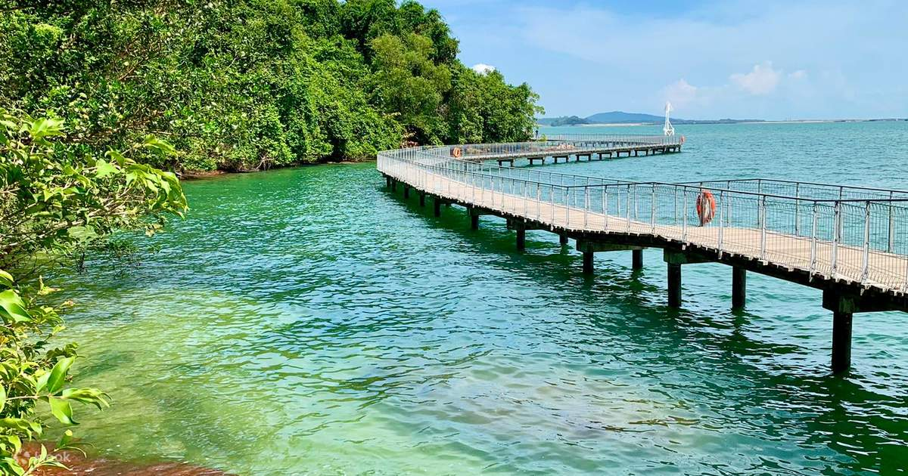

ubin
ulau Ubin is an island northeast of mainland Singapore.
Cycle trails and footpaths criss-cross the hills, going past disused granite quarries
traditional kampongs (villages). Kingfishers and bulbul birds inhabit the tidal flats
and mangroves of the Chek Jawa Wetlands. The Jejawi observation tower and a looped boardwalk offer
views of this area. Fo Shan Ting Da Bo Gong Temple houses statues of local deities

Home Page